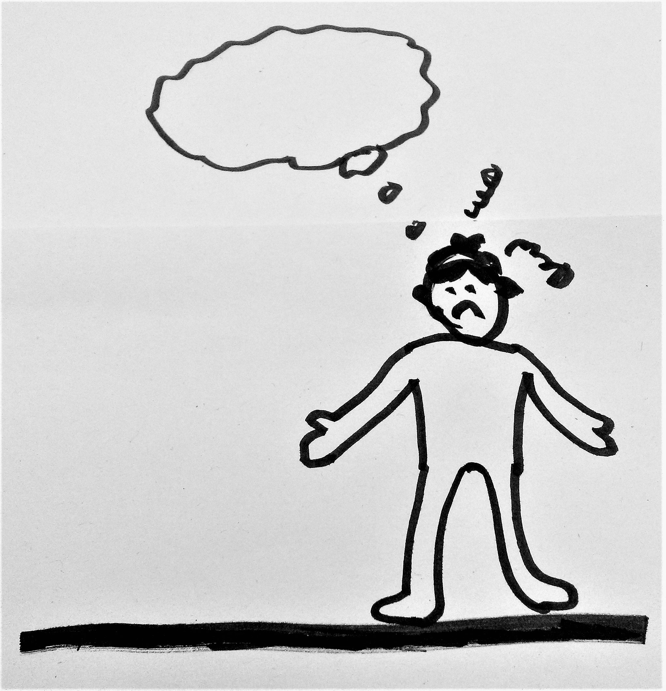
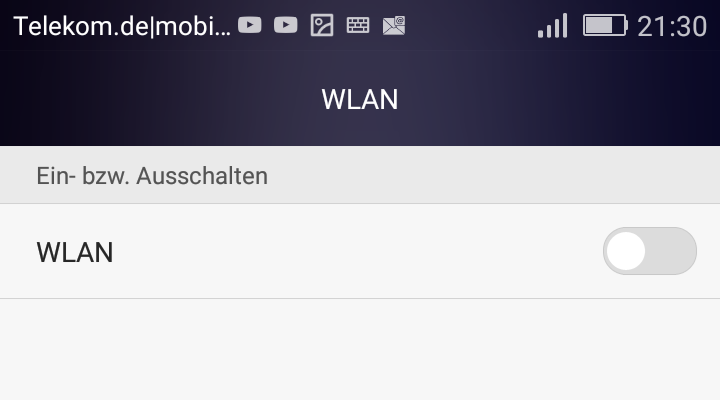

Weil sich Ihr Smartphone/Laptop/internetfähiges Gerät automatisch mit einem WLAN verbindet ohne vorher zu überprüfen, ob es das richtige bzw. ein sicheres Netz ist.
Wenn Ihr Gerät mit einem "falschen" Netzwerk verbunden ist, können Sie, wenn Sie die URL-Adresse von einer Website eingeben, auf einer anderen Website landen.
Das ist nicht nur nervig, sondern kann auch gefährlich werden: z.B. wenn Sie dadurch eine verbotene Website aufrufen oder Vieren auf Ihr Gerät bekommen.

Wenn Sie WLAN nicht benötigen, können Sie es ganz ausschalten. Dann kann sich Ihr Gerät nicht mit einem "falschen" Netzwerk verbinden, wenn Sie z. B. in der Stadt unterwegs sind.
Ansonsten können sie die Funktion ausstellen, dass sich Ihr Gerät automatisch mit einem Netzwerk verbindet. Dann können Sie manuell entscheiden, mit welchem WLAN sich Ihr Gerät verbindet.
Wenn Sie trotzdem nicht wissen, ob sich Ihr Gerät mit dem richtigen WLAN verbunden hat, können Sie auf das Kürzel https achten, um zu überprüfen, ob die Website sicher ist.

Dieses Projekt um die Welt zu verbessern ist mit "Jugend hackt" entstanden. Für mehr Infos: